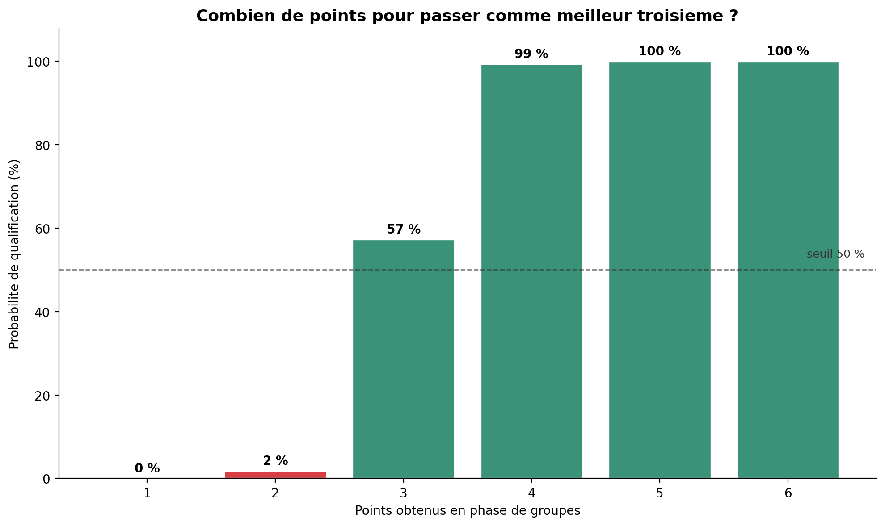

Le premier Mondial à 48 équipes a un format inédit que personne ne maîtrise encore. J'ai simulé 50 000 phases de groupes pour répondre à une question concrète : combien de points faut-il pour se qualifier comme meilleur troisième ?
La Coupe du Monde 2026 passe de 32 à 48 équipes, réparties en 12 groupes de 4. Les deux premiers de chaque groupe se qualifient, plus les 8 meilleurs troisièmes sur les 12.
Ce système de repêchage est inédit, et il change la donne pour les équipes des chapeaux inférieurs : finir troisième de son groupe n'est plus synonyme d'élimination. Mais alors, combien de points faut-il viser pour faire partie des repêchés ? C'est précisément la question que ce projet quantifie.
En simulant 50 000 phases de groupes, la probabilité de qualification d'un troisième selon son nombre de points devient très claire.

La conclusion marquante : dans ce nouveau format, une seule victoire en trois matchs peut suffire à atteindre la phase à élimination directe d'une Coupe du Monde. C'est historiquement très faible, et ça résume bien l'esprit d'ouverture du format à 48.
Le but est d'étudier le format, pas de prédire qui gagne. Le modèle est donc volontairement simple et neutre : toutes les équipes sont traitées à égalité, avec des probabilités d'issue calées sur les fréquences historiques de la Coupe du Monde.
Chaque match a une issue tirée selon les fréquences observées en Coupe du Monde : environ 38 % de victoires de chaque côté, 24 % de nuls.
On simule les 6 matchs de chaque groupe de 4, ce qui donne le classement final et identifie le troisième.
Les 12 troisièmes sont comparés, on garde les 8 meilleurs. Les égalités sont tranchées au hasard, comme le font la différence de buts et le tirage au sort dans le règlement FIFA.
On recommence des dizaines de milliers de fois pour obtenir des probabilités stables et fiables.
Si une seule victoire peut suffire, c'est une formidable ouverture pour les petites nations. Mais ça soulève aussi une vraie question d'équité sportive : deux équipes à performance identique peuvent connaître des sorts différents selon le groupe qui leur a été tiré, et le système de repêchage des troisièmes crée des chemins inégaux vers les seizièmes.
J'explore cette question dans une tribune dédiée : faut-il accepter le compromis du format à 48, ou aller jusqu'à 64 équipes pour retrouver une structure parfaitement symétrique ? Ce projet de données en est le point de départ chiffré.
Le notebook commenté, les modules Python et les tests, en open source.